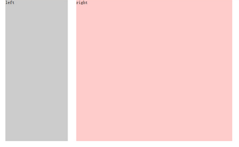

如何用css进行网页布局
网页布局就是块儿与块儿之间的关系，块儿挨着块儿，块儿嵌套着块儿，块儿压着块儿~，通常的布局有一列布局，二列布局，三列布局
一列布局
<html xmlns="http://www.w3.org/1999/xhtml">
<head>
<meta http-equiv="Content-Type" content="text/html; charset=utf-8" />
<title>一列布局</title>
<style type="text/css">
body{ margin:0; padding:0; font-size:30px} <!--清除默认样式，设置字号为30像素-->
div{ text-align:center; font-weight:bold} <!--设置div中的字体为居中对齐，字号为加粗体-->
.main,.footer{ width:500px;margin:0 auto;} <!--设置这两个div块宽度为500像素，水平居中显示-->
.head{width:100%; height:100px;background:#ccc} <!--设置宽度为最大宽度，高度为100像素，背景颜色为灰色-->
.main{ height:600px; background:#FCC} <!--设置高度为600像素，背景颜色为粉红色-->
.fppter{height:50px;background:#9CF} <!--设置高度为50px，背景为蓝色-->
</style>
</head>
<body>
<div class="head">head</div>
<div class="main">main</div>
<div class="footer">footer</div>
</body>
</html>
效果图：

宽度，高度，背景颜色，对齐方式。二列布局
<html xmlns="http://www.w3.org/1999/xhtml">
<head>
<meta http-equiv="Content-Type" content="text/html; charset=utf-8" />
<title>二列布局</title>
<style type="text/css">
body{ margin:0; padding:0; font-size:30px; font-weight:bold}
div{ text-align:center; line-height:50px}
.main{ width:960px; height:600px; margin:0 auto}
.left{ width:200px; height:600px; background:#ccc;float:left;}/*左浮动样式*/
.right{ width:735px; height:600px; background:#FCC;float:right}/*右浮动样式*/
</style>
</head>
<body>
<div class="main">
<div class="left">left</div>
<div class="right">right</div>
</div>
</body>
</html>
效果图：
总结：二列布局跟一列布局相比，大体不变，只是增加了
float,浮动属性，一个左浮动，一个右浮动。三列布局
<html xmlns="http://www.w3.org/1999/xhtml">
<head>
<meta http-equiv="Content-Type" content="text/html; charset=utf-8" />
<title>三列布局</title>
<style type="text/css">
body{ margin:0; padding:0; font-size:30px; font-weight:bold}
div{ line-height:50px}
.left{ width:200px; height:600px; background:#ccc;position:absolute; left:0; top:0}
.main{ height:600px;margin:0 310px 0 210px; background:#9CF}
.right{ height:600px; width:300px; position:absolute; top:0;right:0; background:pink;}
</style>
</head>
<body>
<div class="left">left</div>
<div class="main">设计首页的第一步是设计版面布局。就象传统的报刊杂志编辑一样，我们将网页看作一张报纸，一本杂志来进行排版布局。 虽然动态网页技术的发展使得我们开始趋向于学习场景编剧，但是固定的网页版面设计基础依然是必须学习和掌握的。它们的基本原理是共通的，你可以领会要点，举一反三。</div>
<div class="right"<right</div>
</body>
</html>
效果图：
总结：三列布局，选择了
position:absolute,绝对定位的方式，分别让两个div块元素，紧贴在左上和右上两个位置。还通过设置margin使main水平居中在浏览器中央，并且与左右div有10px的间距。